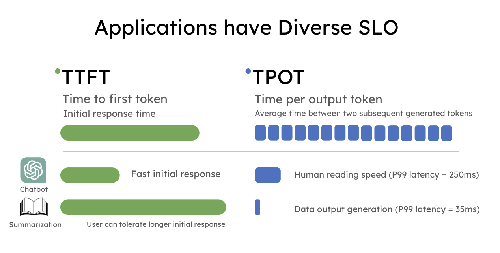
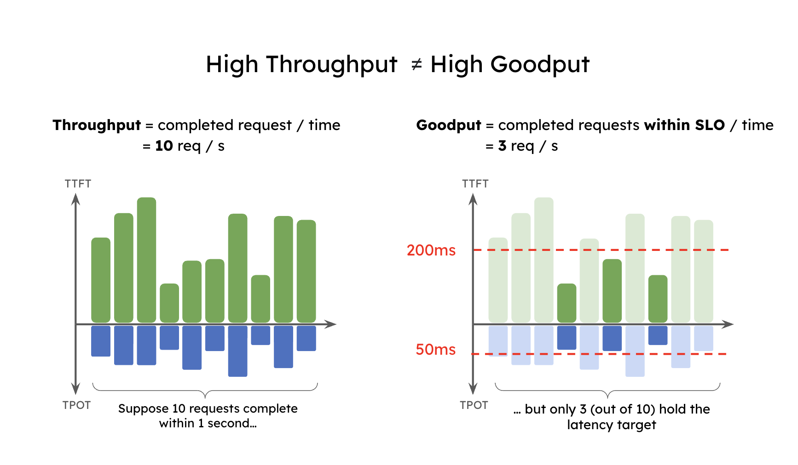
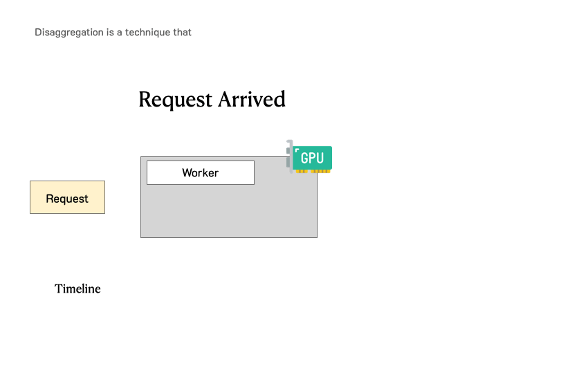
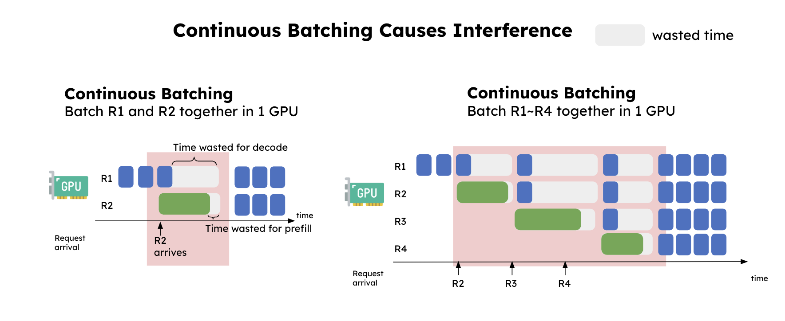
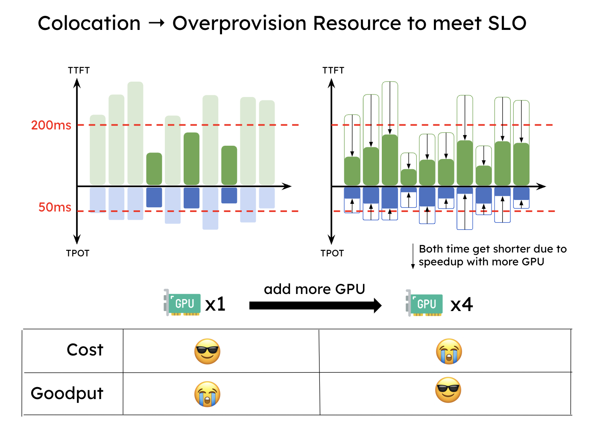
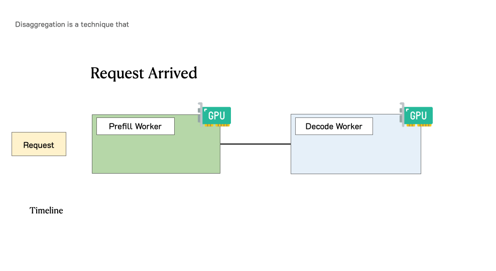
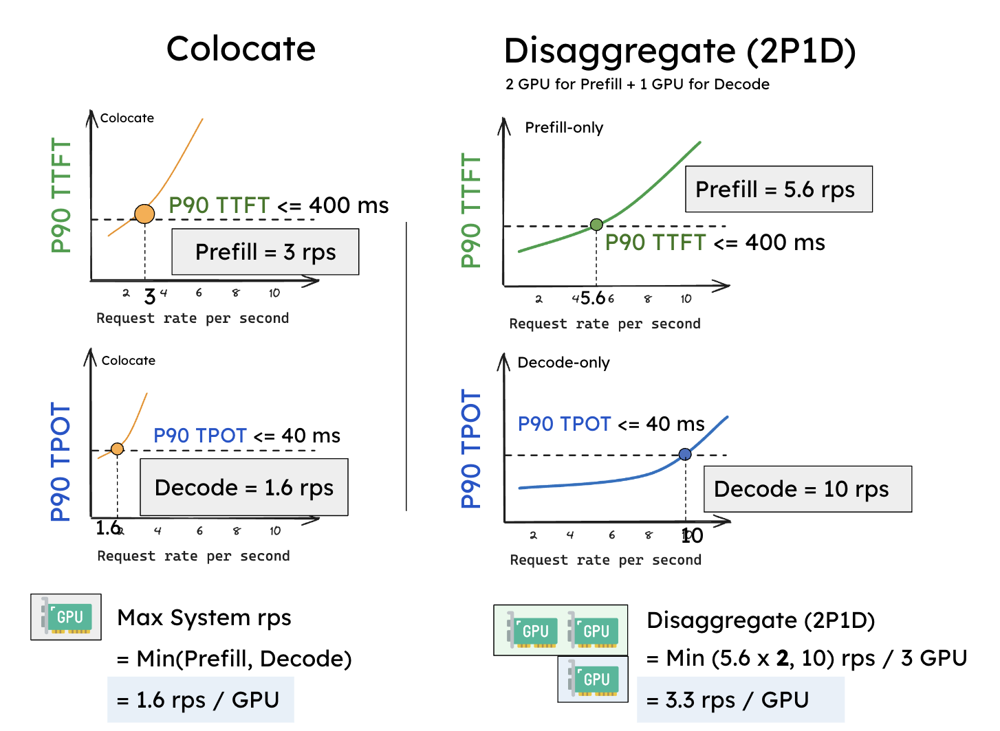
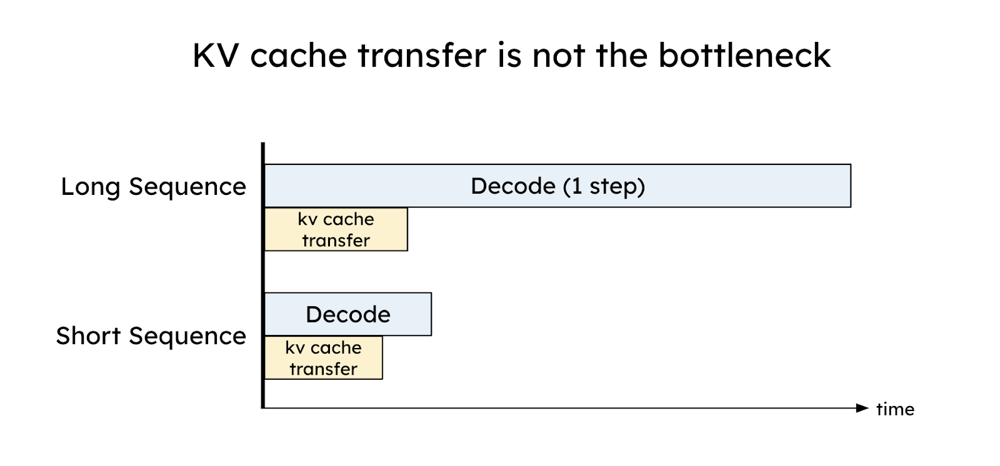
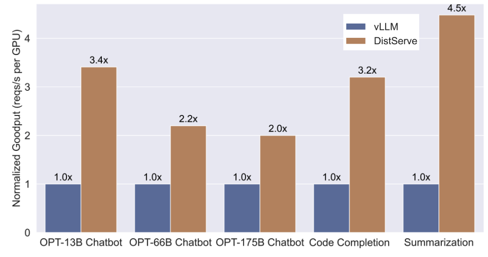

TL;DR: LLM apps today have diverse latency requirements. For example, a chatbot may require a fast initial response (e.g., under 0.2 seconds) but moderate speed in decoding which only needs to match human reading speed, whereas code completion requires a fast end-to-end generation time for real-time code suggestions.
In this blog post, we show existing serving systems that optimize throughput are not optimal under latency criteria. We advocate using goodput, the number of completed requests per second adhering to the Service Level Objectives (SLOs), as an improved measure of LLM serving performance to account for both cost and user satisfaction.
To optimize goodput, we introduce prefill-decode disaggregation, a.k.a. splitting prefill from decode into different GPUs. We also build a system prototype DistServe, which achieves up to 4.48x goodput or 10.2x tighter SLO compared to exiting state-of-the-art serving systems, while staying within tight latency constraints. We are integrating DistServe with vLLM to bring the technique to the community.
Background: Throughput vs. Goodput
Large language models (LLMs) are changing how the industry adopts AI technology in their services, but the cost of LLM serving remains high. To reduce serving costs, many companies today focus on maximizing the overall LLM serving system throughput, i.e., the number of requests served per second (or rps), as a proxy to minimize dollar per request ($/req). Almost all popular LLM serving engines like vLLM and TensorRT-LLM use throughput as the primary metric to compare performance with each other.
In reality, downstream applications come in different flavors – they may have different latency requirements for user experience, hence dramatically different service level objectives (SLO) to satisfy. The most widely used SLOs in LLM services are:
- Time to first token latency (TTFT): measuring the time taken for the LLM to output the first generated token to the user.
- Time per output token (TPOT): measuring the average latency between two subsequent generated tokens.

Throughput measures the number of requests or tokens completed across all users and requests, hence overlooking these latency requirements. We introduce Goodput, the number of completed requests per second that adheres to SLOs (TTFT and TPOT requirements), and show it is a much better metric, because it captures request throughput under SLO attainment – hence both cost and service quality.
To briefly illustrate goodput, assuming an application requires TTFT < 200 ms and TPOT < 50 ms for at least 90% of the requests, we get the following definition:
Goodput (P90 TTFT < 200ms and P90 TPOT < 50ms) = maximum request rate per second when at least 90% of requests have both TTFT < 200ms and TPOT < 50ms
Figure 1 shows a simple case where an application with high throughput may have a low goodput. The application has a throughput of 10 requests per second. But with the latency constraint, only 3 requests hold within the SLO constraint, yielding a goodput of 3 requests per second. As you can imagine, a user of this high-throughput but low-goodput serving system will still suffer from low quality of service.

Let’s summarize the terms introduced in the subsection:
- Goodput: A measure of the effectiveness of an LLM serving system, taking into account both cost and user satisfaction. It is defined as the maximum request rate per second that the system can withhold while meeting a specified service level objective (SLO).
- Throughput: The number of completed requests per second processed by an LLM serving system.
- Service level objective (SLO): A set of targets that an LLM serving system must meet to provide a satisfactory user experience. Common SLOs include time-to-first-token (TTFT), time-per-output-token (TPOT), end-to-end latency (E2E), and exponential moving average (EMA) latency.
- Prefill: The first phase of LLM inference that digests all the input tokens, populates the KV Cache, and generates the first output token.
- Decode: The subsequent phase that generates token-by-token until termination.
- Time-to-first-token (TTFT): The time it takes for an LLM serving system to generate the first token in response to a user request.
- Time-per-output-token (TPOT): The average time it takes for an LLM serving system to generate subsequent tokens in response to a user request.
Why Existing Systems Fail to Achieve High Goodput?
How does an LLM request get processed?
Before we dive deeper, let’s revisit the lifecycle of a request in LLM serving. Figure 2 shows this process. When a request comes into an LLM inference engine, the system will first take the user input to generate the first token (prefill), then generate outputs token-by-token autoregressively (decode). A request usually consists of one prefill step, and multiple decoding steps until termination.
LLM serving systems usually batch prefill and decoding all together using a technique called iteration-level scheduling or continuous batching, so that the GPUs process a batch size as large as possible, run one iteration, and generate one token for all of these requests. This technique effectively enhances the overall throughput (tokens per second) and is widely adopted in popular serving systems such as vLLM and TensorRT-LLM.

However, the two phases have very distinct characteristics in computation. Prefill is very compute-bound, meaning a small batch of prefills or even a single long enough prefill will easily saturate GPU computation. On the other hand, decoding needs a much bigger batch size to hit the compute bound, and is more easily subject to the memory bandwidth limit of the GPU.
Due to their vastly different compute patterns and SLOs, colocating these two phases is not optimal for achieving high goodput because:
-
Collocating prefill and decode causes Interference between them.
-
Colocating prefill and decoding couples their resource allocation and parallelism strategies.
We explain them next.
Collocating prefill and decode causes Interference
Figure 3 shows a simplified view of the interference between prefill and decode. On the very left, we batch these 2 requests together in 1 GPU. We can see that continuous batching significantly elongates the latency for R1 (decode), and at the same time slightly increases the latency for R2 (prefill). On the right, we have a steady stream of incoming requests. Now the requests in the decode phase get “bugged” every single time a prefill requests come into the system, causing an unexpectedly long delay on decode.

As a result of this interference, as shown in Figure 4, when services must satisfy both TTFT and TPOT SLOs, systems have to over-provision resources to meet the latency goal, especially when either SLO is strict.

Resource allocation and parallelism strategy are coupled
Moreover, with colocation, the parallelism strategies (tensor, pipeline, or data parallelism) are inherently coupled for the prefill and decoding computation. As discussed previously, due to their distinct computation patterns and latency goals, the optimal parallelism strategy for the prefill and decoding phase is usually different. For example, when TTFT is stringent and TPOT is loose, the prefill phase prefers tensor parallelism (TP) to meet the tight latency target while the decoding phase prefers data or pipeline parallelism to boost the throughput. We next describe our new approach to address these problems.
Disaggregating Prefill and Decoding
The intuition is simple: disaggregating prefill and decode into different GPUs and customize parallelism strategies for each phase. This naturally solves the two problems above:
- No interference between prefill and decode makes both phases faster and easier to attain their respective SLO.
- Decoupled resource allocation and parallelism strategy such that optimization can tailor for prefill and decode separately.
Figure 5 illustrates how a request is processed in such a disaggregated system. When a request arrives in the system, it first goes to a prefill worker and completes its prefill phase. Then the system migrates its intermediate states (mainly KV Cache) to a decode worker, and multiple decode steps are taken to generate subsequent tokens. The request leaves the system once it finishes generation.

Let’s go through a simple experiment to see why disaggregation is beneficial. We serve a 13B LLM on a single A100-80GB GPU with a synthetic workload of inputs of length 512 and output length 64 following Poisson arrival. We gradually increase the request rates (x-axis) and measure how the two latencies (P90 TTFT and P90 TPOT, y-axis) change in Figure 6.
Suppose we set the SLO of P90 TTFT as 0.4 seconds and P90 TPOT as 0.04 seconds (the horizontal line in Figure 6). We observe the existing systems can support roughly 3 rps that stay within the TTFT latency constraint using 1 GPU, whereas for TPOT, it sustains 1.6 rps (Figure 6a). Since we need to satisfy both constraints, the goodput of existing colocated system becomes: Goodput (colocate) = min(3, 1.6) = 1.6 rps (per GPU).
The performance is significantly boosted after disaggregation. Prefill worker and decode worker can both achieve better rps than the previous if only handling one phase – as shown in Figure 6, one prefill worker achieves roughly 5.6 rps and one decode worker achieves roughly 10 rps. More importantly, now we can flexibly allocate 2 prefill workers to pair with 1 decode worker (notate as 2P1D), 3 GPUs in total. The goodput becomes:
Goodput (2P1D) = min(5.6 x 2, 10) = 10 reqs/s / 3 GPUs ≈ 3.3 reqs/s (per GPU).
This experiment shows that this simple disaggregation without any parallelism yields 2x goodput.

In fact, besides different resource allocation for each phase, disaggregating prefill and decoding further free us to pick the best parallelism strategy for each phase to optimize goodput (termed as “tailored parallelism”), which we studied in detail in our paper.
KV cache transfer
Disaggregation comes at the cost of transferring intermediate states (i.e., KV Cache) between prefill and decoding GPUs. At first glance, KV cache is a big memory expenditure in LLM inference, and the transfer of KV cache between GPUs sounds like a bottleneck. However, we show the opposite: with proper placement, KV cache transfer overhead can be effectively minimized to be as low as less than the time of a decoding step, thanks to today’s high-speed networks such as NVLink and PCI-e 5.0.
To see this, assume we have 8-channel PCIe 5.0 x 16 (64GB/s per link) as the intra-node network between GPUs. Given a request with 2048 tokens, we have the following estimation for transferring KV caches when serving OPT-175B:
Latency = 2048 tokens * (4.5 MB/token) / (64GB/s * 8) = 17.6 ms
The latency is less than one single decoding step for OPT-175B (about 30 - 50ms on A100). For larger models, longer sequences, or more advanced networks (e.g, A100-NVLink with a bandwidth of 600GB/s), as Figure 7 shows, the comparative overhead associated with KV cache transmission becomes much less significant relative to a single decoding step. In conclusion, careful placement of prefill and decoding workers to utilize high-bandwidth networking can effectively hide the KV cache transfer overhead, which is discussed in detail in our paper.

DistServe: Evaluate the effectiveness of Disaggregation
We implemented the proposed techniques in a system prototype, called DistServe, and compared it with existing systems on three workloads and datasets with distinct latency constraints: chatbot, code completion, and summarization, shown in the Table below.
Figure 9 shows the results comparing DistServe to vLLM:
- Chatbot: DistServe sustains 2.0x - 3.41x higher goodput compared to vLLM.
- Code Completion: DistServe sustains 3.2x higher goodput and 1.5x more stringent SLO than vLLM. As a real-time coding assistant, the code completion task demands lower TTFT than chatbot, this leads to both systems ultimately being constrained by the TTFT requirement. However, by eliminating the interference of the decoding jobs and tailoring tensor parallelism for prefill, DistServe reduces the average latency of the prefill jobs, thereby meeting the TTFT requirements of more requests.
- Summarization: DistServe achieves 4.48x higher goodput and 10.2x more stringent SLO than vLLM. As expected, as vLLM colocates prefill and decode together, it experiences a greater slowdown in decode that fails to meet the TPOT requirement.
See our technical report for more fine-grained experiment results.

Disaggregation vs. Chunked Prefill
In this section, we compare prefill-decoding disaggregation to the recent approach known as dynamic splitfuse (alternatively, chunked prefill and piggybacking), and discuss their strengths and weaknesses.
The key idea of dynamic splitfuse is to split a lengthy prefill into smaller chunks, thereby forming a batch that fully engages the GPU by combining a chunk of prefill with several decoding tasks, a process referred to as piggybacking. The chunk size is deliberately chosen based on workloads so that this approach can keep the GPU fully utilized at all steps to enhance overall system efficiency. However, it might introduce an increase in both TTFT and TPOT, potentially diminishing goodput under latency constraints. This is due to its inability to completely segregate prefill and decoding operations, leading to resource contention and a compromise between TTFT and TPOT.
For TTFT, chunked-prefill causes overheads for prefill (hence high TTFT) regardless of chunk size. First, selecting a chunk size significantly below the GPU’s saturation point prolongs the execution duration of prefill tasks. For instance, assuming a GPU saturation at a prefill length of 512, setting the chunk size to 256 would double the TTFT for all prefills extending beyond 512. Second, even if the chunk size is optimized to nearly maximize GPU usage, chunked prefill significantly increases memory access for prefill tasks due to the necessity of loading the KV cache from GPU’s HBM to SRM for each subsequent chunk. This scenario escalates especially for longer prefills, translating to a quadratic increase in KV cache loading operations compared to a linear increase in the unchunked setup, and reducing opportunities for piggybacking due to limited decode token slots. As for TPOT, as we have revealed earlier, colocating prefill and decoding in a batch inherently slows down all those decoding tasks.
In conclusion, chunked prefill may be promising in maximizing the overall throughput, but when the application does not want to tradeoff between TTFT and TPOT but to adhere to both, disaggregation emerges as a better choice.
DistServe Today
We are working with vLLM community to integrate the presented techniques into the vLLM ecosystem.
Concurrent to our work, Splitwise, TetriInfer and DéjàVu also adopted this disaggregation strategy to separate prefill from decode to achieve better LLM serving goodput. We are excited to see many researchers and companies adopting disaggregation to optimize system goodput, and we believe that disaggregation will soon become the de facto choice for LLM serving engine.
Acknowledgement
We would like to thank Vikranth Srivatsa, Lanxiang Hu, Will Lin for providing insightful feedback to our blog.
Citation
@article{zhong2024distserve,
title={DistServe: Disaggregating Prefill and Decoding for Goodput-optimized Large Language Model Serving},
author={Zhong, Yinmin and Liu, Shengyu and Chen, Junda and Hu, Jianbo and Zhu, Yibo and Liu, Xuanzhe and Jin, Xin and Zhang, Hao},
journal={arXiv preprint arXiv:2401.09670},
year={2024}
}